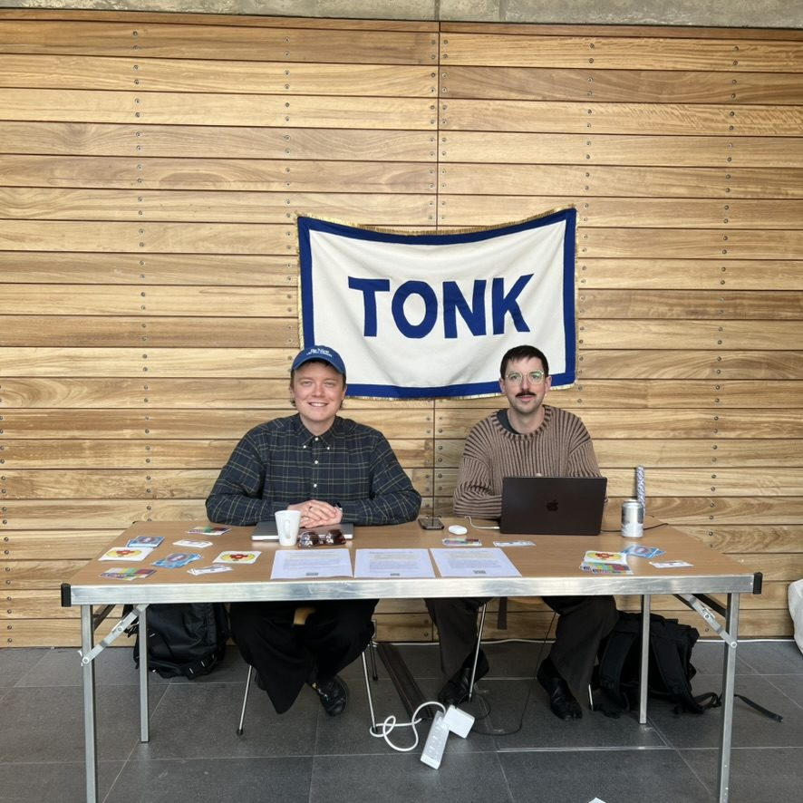

When I was a kid…
…I remember crouching in front of my parents’ TV, drooling over films like Singin’ in the Rain and School of Rock. I would dance up and down the school corridors and generally look for the spotlight.
[kid pic]
But as a teenager, when I joined the National Youth Theatre, and performed at the Edinburgh Fringe, I didn’t feel at home. I had this analytical itch to understand the systems that shape our world, so I went to Cambridge to get a philosophy degree.
While at Cambridge I also volunteered for a homelessness charity and became an award-winning ballroom dancer.
[ballroom dancing pic]
As a graduate…
…I was blown away by the formidable creative power of technology - particularly for young people looking to make a positive impact.
I spent 7 years in tech, building startups or leading teams working on products used by millions.
My proudest achievement was raising millions of dollars from world-class investors for a high-risk technology bet.
My highlight reel from tech includes:
- A decentralised services company
- A climate change publication
- A vegan rewards app
As an entrepreneur…
…I got really good at:
- Positioning creative assets to resonate with commercial partners
- Building deep industry relationships
- Cultivating buzz at international conferences
- Dealmaking, pitching, fundraising and market modelling

Everything was going swell until…
…the summer of 2025, when I was travelling back from California, looked out the plane window and had an epiphany:
- My startup had gotten way too technical for me to be the right person to lead it
- I sorely missed the arts and artists
So I handed the reins to my cofounder, and took a gap year. I travelled, caught up on my enormous pile of movies, tv, music and books.
I also produced a music video and arranged financing for a short film.
Now I am nearly 30
Looking back, I feel my commercial experience was an incredible adventure and has prepared me well to pursue my passion for film.
I think my experience:
- Pricing and pitching complex assets,
- Building relationships in a fast-moving industry,
- Working with creative people on unpredictable projects,
has prepared me for a promising career in film sales. I have a lot of learning to do and am looking for the right opportunity to work really hard, in a team of really good people, where I’m learning and growing every day.
If any of that resonates I would love to talk. harry@harrykingdon.com